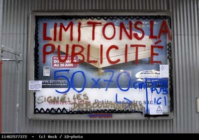

| |
Site dédié à la publication d'informations communiquées par le Collectif des déboulonneurs. En aucun cas ce site n'appelle à des actions illégales. | |
 |
||
|
Accueil du site > Paris > 19h et une poignée de secondes… Vendredi 28 avril 2006. Angle de la rue de (...)
Une bonne octantaine de personnes sympathisantes convergent vers le lieu choisi pour notre 6e sacrifice publicitaire en espace public… 3 panneaux déroulants sous verre, enchâssés sous des échafaudages abîment notre regard, notre esprit, pour ne pas dire la planète : ces panneaux ne savent pas encore à qui ils ont affaire… Dans un gentil désordre, tout le monde s’installe… Escabeaux, matériels papier et sono, pots ou aérosols de peintures : on se déploie, on déplie sur la surface du trottoir… Une petite table de fortune est installée avec des liasses de documents informatifs… L’ « auberge espagnole » devait être fermée : les boissons et collations que chacun-e devait ramener sont invisibles ! A croire que les temps changent : il semble que l’on préfère la tranche de vie à la tranche de pain. A moins que l’on préfère barbouiller qu’être barbouillé… Pendant qu’un des déboulonneurs commence à décrire au micro l’action qui commence à avoir lieu, les heureux barbouilleurs, dont une barbouilleuse heureuse, s’activent tranquillement sur les panneaux, en traçant de manière lisible à la peinture quelques mots parlants : « Limitons la publicité : 50 x 70, signé les déboulonneurs » ; « Pas de quartier pour la pub, pas de pub dans mon quartier » ; « Travaille, consomme et meurs » ; « Publicité = viol mental »… Les marques sont soigneusement recouvertes…, des affiches de la taille de 50 cm par 70 cm, sont collées ainsi que des affichettes, avec dessins ou textes… Des cyclistes de la police municipale ont stationnés en face, transmis leurs demandes d’instruction, et attendent les renforts : ils ne savent pas que nous sommes beaucoup plus impatients qu’eux ! Des prises de paroles se succèdent, pendant que se font des rencontres avec les passants. Puis, des paroles au micro sont offertes aux automobilistes qui s’arrêtent à notre hauteur, bloqués par le « feu rouge », pour connaître leurs réactions spontanées face à notre action, ou pour les mettre devant leurs contradictions d’automobilistes pollueurs cautionnées par le système publicitaire … C’est un festival : l’animateur s’en donne à cœur joie et fait éclater une bonne humeur générale… Une voiture de police arrive enfin. Immédiatement, nous l’accueillons. Le médiateur police vient le premier à leur rencontre, pour les rassurer quant à nos intentions, et les barbouilleurs et finalement une large partie de l’assistance le rejoignent aussitôt. Les barbouilleurs présentent leurs pièces d’identité, d’autres personnes de l’assistance les tendent aussi. Quelques unes sont prises par les policiers, mais devant cette collaboration inattendue, ils finissent par refuser les pièces. Ainsi, un barbouilleur, malgré son insistance répétée, son aérosol dégoulinant à la main, et trois tentatives successives et espacées, s’est vu refuser qu’on le contrôle, au prétexte qu’ils en avaient déjà assez en leur possession… La policière qui mène l’entretien est détendue, souriante, nous demande combien de temps nous comptons rester là, et nous propose que nous en restions là en nous dispersant. Cela ne nous convient pas. Elle nous demande ce que nous préférons faire : si cela nous irait que nous partions, sans qu’il n’y ait de poursuites ou formule d’autres propositions inhabituellement conciliantes face à un groupe en flagrant délit de dégradation de biens privés… L’un des barbouilleurs prend les devants et la parole de manière un peu sarcastique, en lui disant à peu près que « devant la paresse affichée par la police, nous souhaitons être interpellés, afin qu’elle travaille un peu », puis en le répétant à l’assistance au microphone. La contrariété s’affiche sur la policière si coopérative jusque là, qui poursuit alors son office, en lien avec la préfecture. On entonne alors à l’unisson notre chant du barbouilleur, sur l’air du déserteur de Boris Vian. Tout le monde y met autant de cœur que de voix, et l’instant est véritablement vibrant, tellement l’espace sonore de ce beau quartier est bel et bien occupé… Une voiture banalisée vient encore se garer sur le trottoir d’en face. Devant la lenteur de réactions des autorités, nous décidons de leur offrir un flagrant délit ! A portée de main et sous leurs yeux, nous nous en prendrons à un obstacle publicitaire à deux faces, ce que les publicitaires appellent dans leur jargon un sucette. Après concertation, et sous les commentaires pleins de vie et d’humour faits au micro du déboulonneur animateur, 4 barbouilleurs écrivent « obstacle publicitaire nuisible. 50x70 ». Lorsque nous abordons la face verso, nous tombons sur une campagne municipale d’affichage en faveur de la lutte contre le sida. Voilà un cas intéressant, qui suscite polémique et mérite débat : barbouiller ou pas ? Si oui comment ? Nous organisons un débat et les prises de position se succèdent dans l’assistance (perception du public, contenu vs contenant, etc…), ainsi que des propositions d’inscriptions… Le débat est riche et très animé, mais toujours courtois, avec des positions affirmées et différentes. La police, elle, est partie, et a rendu les pièces d’identité, et n’a laissé que l’équipe pas banale et néanmoins banalisée de la police de la préfecture… Ils disent attendre les renforts. Finalement, on procède à un vote avec trois items : contre le barbouillage pur et simple (épargner cette affiche), pour le barbouillage brut (peu importe le contenu), pour un barbouillage pédagogique (contenu non visé mais critique du dispositif) et les abstentions. Le résultat est tellement serré qu’il est contesté. Il faut revoter et recompter, sans oublier celles et ceux qui étaient sur l’autre trottoir, et qui n’ont même pas voté par procuration… Dans notre joyeuse parodie, nous parvenons quand même à trouver un consensus (opéré à partir du décomptage : 22 voix pour le barbouillage pédagogique, 16 contre le barbouillage, 8 pour le barbouillage indifférencié, tout le reste en abstention et en non-inscrit…). Nous inscrirons, sur la partie dessin, au marqueur large « cause légitime, mais dispositif trop grand : 50 cm par 70 cm ». Quelque soit le jugement du résultat (en terme de radicalité, d’efficacité ou de perception par un public néophyte ou averti), la consultation a permis une bonne discussion et une décision au consensus… 
photo P.Weck / 1D-photo
L’heure passant, et en arrivant à la réflexion que la police a décidé de laisser pourrir notre manifestation, quelles que soient nos provocations. Nous décidons de « nous » dissoudre, pour prolonger notre moment radieusement décalé et nos discussions sans fin dans un café voisin… Et discuter de la conférence de presse que nous donnons à la maison de la radio vendredi 3 mai, suite au procès en correctionnelle de deux déboulonneurs montpelliérains le 27 juin. Et tergiverser sur l’inaction policière à Paris… La période d’essai de 6 mois est terminée. Nous pouvons maintenant passer à l’étape suivante, en divulguant le lieu le plus tôt possible. Rendez vous vendredi 26 mai 2006 à 19h place de la République, terre-plein central.Réservez dès maintenant, faites passer le mot, ramenez du monde, communiquez sans restriction ! D’autres photos dans notre galerie |
|
Site utilisant SPIP - Hébergement Ouvaton
|